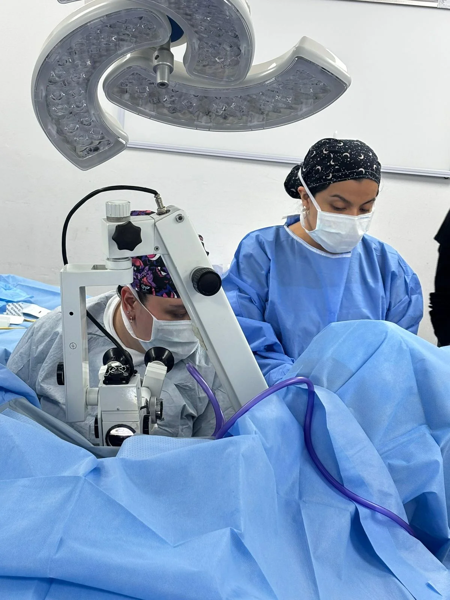
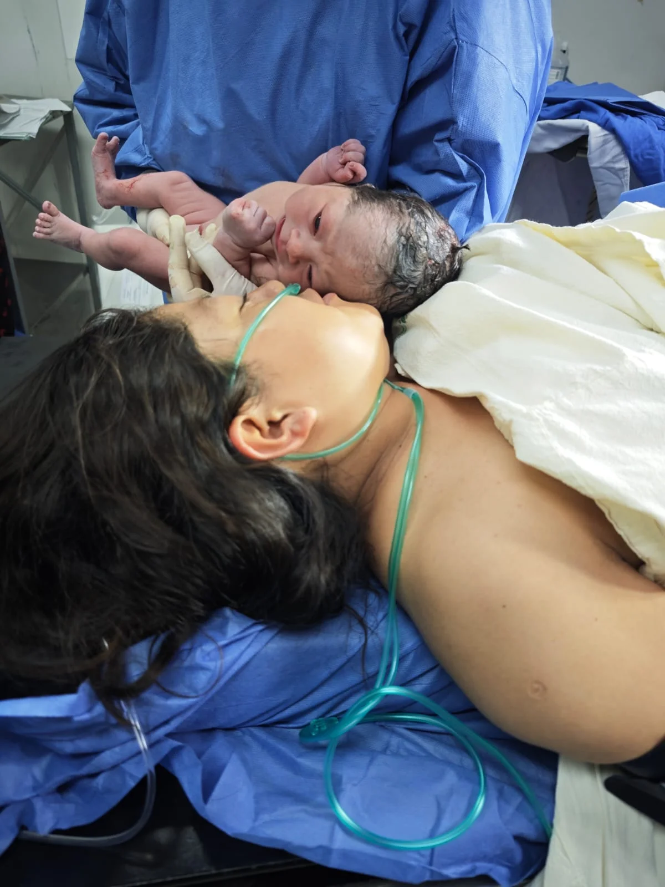
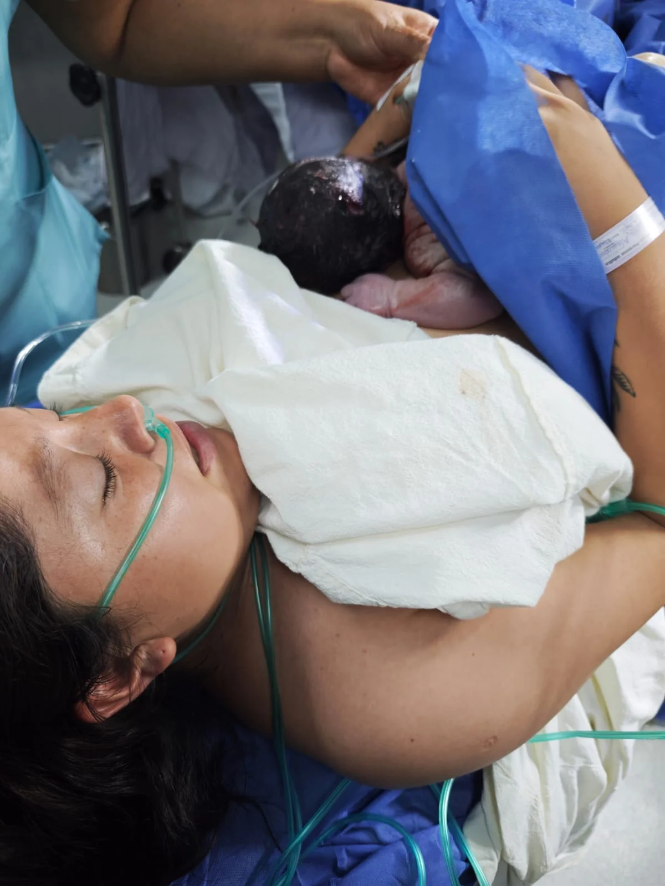
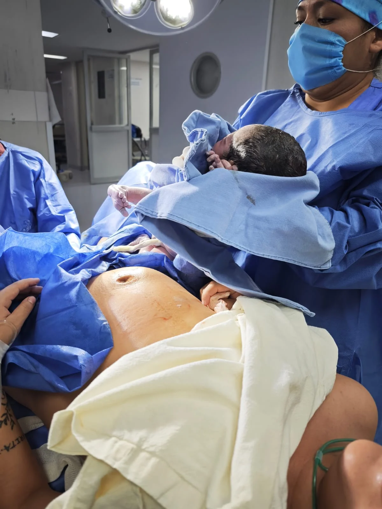
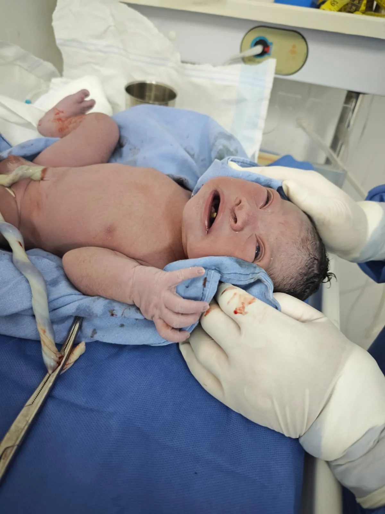
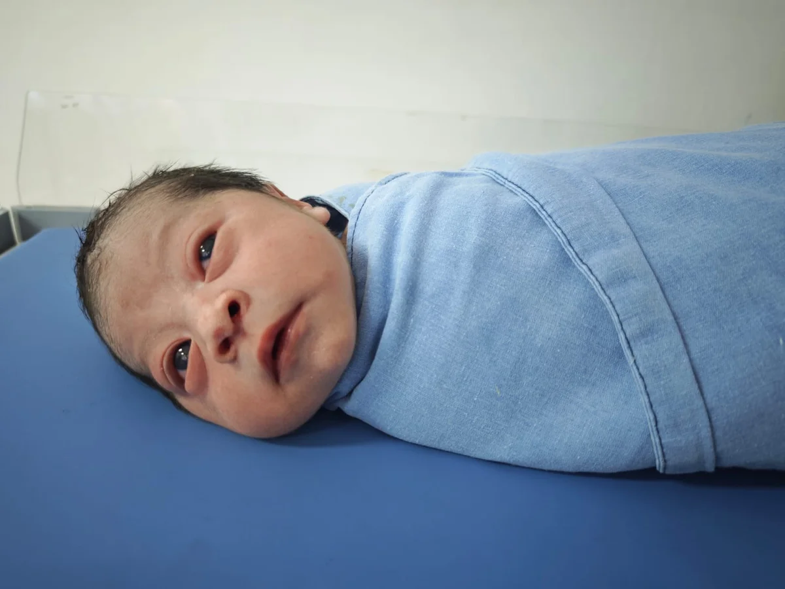

Si buscas a un ginecólogo para embarazo en Polanco que te escuche y vigile paso a paso la salud de tu bebé, la Dra. Lidia Chávez te ofrece un espacio de atención médica confiable y seguro.
Ofrecemos consulta de atención integral de embarazo en Aurafem (Polanco y Anzures, CDMX). Reserva tu cita fácil por WhatsApp.

Contar con la asesoría de una especialista experimentada como tu ginecólogo para embarazo en Polanco te permite afrontar los cambios gestacionales con plena tranquilidad.
La atención médica se estructura de manera progresiva para monitorear el desarrollo del bebé:
Confirmación del embarazo por ecografía, manejo de náuseas o fatiga, suplementación folática y prevención de riesgos iniciales.
Evaluación del crecimiento anatómico fetal, función placentaria, presión arterial y orientación nutricional materna.
Monitoreo estrecho de la presentación fetal, líquido amniótico, salud placentaria y preparación del plan de nacimiento.
Agendas tu horario en el consultorio de Polanco sin intermediarios.
Platicamos sobre tus dudas físicas y evaluamos tus análisis recientes.
Valoración de presión, peso, crecimiento del vientre y revisión ecográfica.
Indicaciones médicas claras, receta y fecha de tu siguiente revisión.
La Dra. Lidia Chávez prioriza el parto seguro, el acompañamiento respetuoso y la resolución pronta de inquietudes gestacionales.
Son señales de alarma: sangrado vaginal, dolor abdominal o pélvico severo, dolor de cabeza con zumbidos o luces, fiebre, pérdida de líquido y disminución en los movimientos fetales.
Porque ofrece un acompañamiento continuo con rigor científico, ecografía médica y trato empático y respetuoso en cada trimestre de tu gestación.
En cada consulta se evalúa la intensidad sintomática, prescribiendo ajustes nutricionales, descanso y medicamentos seguros autorizados en la gestación.
A partir de la semana 28 las visitas son quincenales, y desde la semana 36 son semanales para vigilar la madurez del bebé y placenta.
La coordinación es inmediata por WhatsApp. Agendamos tu espacio en el consultorio de Aurafem en Polanco / Anzures rápidamente.
Conoce de cerca nuestro consultorio en Polanco, equipamiento y el entorno seguro de atención ginecológica.

Acompañamiento médico en la gestación
Resolución de dudas sobre síntomas comunes Monitoreo de frecuencia cardíaca fetal
Monitoreo de frecuencia cardíaca fetal
 Orientación sobre señales de alarma gestacional
Orientación sobre señales de alarma gestacional

Preparación para el plan de parto
Atención médica cálida en Aurafem Polanco
Consulta gestacional de alta confianza Monitoreo ecográfico del bebé
Monitoreo ecográfico del bebé

Seguimiento médico seguro y sin prisasLa Dra. Lidia Chávez brinda atención ginecológica en Polanco, CDMX, con un enfoque profesional, respetuoso y firmemente orientado al bienestar integral de cada paciente.

Atención médica para valoración general y seguimiento de la salud femenina.
Ver servicio →Estudio preventivo de citología para detección de lesiones en cuello uterino.
Ver servicio →Evaluación visual microscópica avanzada del cuello uterino.
Ver servicio →Monitoreo riguroso mes a mes durante la gestación.
Ver servicio →Diagnóstico, vacunación y manejo integral del Virus del Papiloma Humano.
Ver servicio →Chequeo completo de rutina para proteger tu salud año tras año.
Ver servicio →Atención en zona Miguel Hidalgo, cerca de Polanco, con un fácil acceso y conectividad desde Benito Juárez, Cuauhtémoc y zonas aledañas.
Cantú 11, Colonia Anzures, Miguel Hidalgo, 11590 Ciudad de México, CDMX.
La información contenida en esta página web posee fines exclusivamente educativos e informativos y bajo ningún concepto sustituye una valoración médica profesional en consultorio. Para recibir orientación médica adecuada, agenda una consulta formal con la especialista.
Escríbele directamente a la Dra. Lidia Chávez para revisar fechas disponibles, horarios de atención y resolver tus dudas de forma rápida.